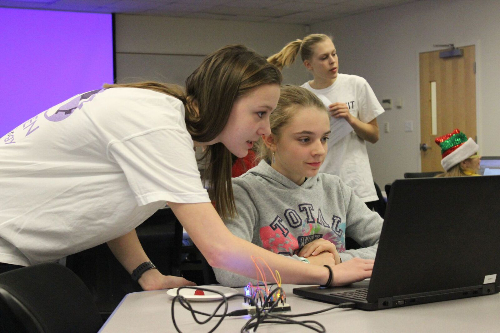

We are a group of individuals that are passionate about technological careers. We invite all majors and minors and both men and women to join us in networking with technological firms and creating a community of like minded individuals!
We hold both professional meetings and fun social events through out the year! We also run a program each year called Digital where we spend a weekend teaching young girls from the Harrisonburg community about technology and encouraging them to consider a career path in technology.
